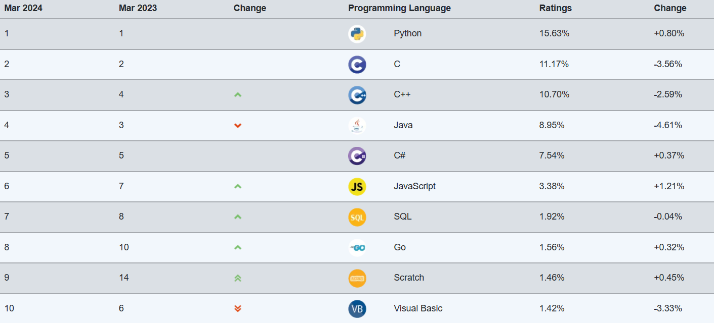

What is programming?
Just as the language that humans understand is called ‘language,’ the language that computers understand is called ‘programming language.’
A programming language is a tool for creating software (games, programs, PowerPoint, etc.) that runs on a computer.
A person who creates software using a programming language is called a programmer, and writing programs is called coding.
Wait ! Programming and coding?
Both refer to the same task. Programming is an expression closer to a computer because it means expressing it with computer instructions, and coding is an expression closer to a language because it means writing code in a programming language such as Python.
Ranking of programming languages!
TIOBE also discloses the popularity of each programming language every month.
Below are the top 20 programming languages as of March 2024, as selected by TIOBE.
I think these results will help you in choosing a programming language. From 1st to 5th place are Python, C, C++, Java, and C#.

Classification of programming languages for coding beginners
Recommended learning sequence
Since there are many different types of programming languages, you may wonder, 'Which language should I study first?' You will worry about this.
If you search here and there, you will find 'Study Python first.', 'Study C language first.' And so on, you will hear various stories.
There is no set order. Before choosing a programming language, it is important to first decide on the purpose for which you will study.
If there is software you want to create, you can start with a language specific to that platform.
If you are a major, I recommend learning the C language first.
< C language - Java - Python - Language required for target field >
The C language can be considered the foundation of all programming languages. Other languages were created based on the C language,
so it is very helpful when studying other languages. Additionally, the compilation engine that interprets the language is often composed of the C language.
However, the level of difficulty is high. It operates in a similar way to hardware, so it has the fastest execution speed. It's great for learning the basic concepts and principles of programming.
If you are a non-major, I recommend starting programming with Python.
<Python - C language - Java - Language required for target field>
Compared to other languages, Python has a simpler syntax, making it less difficult.
Because Python is a programming language with a low barrier to entry, it is an easy language to learn for beginners as well as non-majors in programming.
If you have to learn just one programming language, I recommend Java.
자바는 현재 웹Compared to other languages, Python has a simpler syntax, making it less difficult.
Because Python is a programming language with a low barrier to entry, it is an easy language to learn for beginners as well as non-majors in programming.